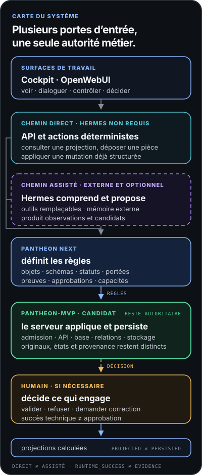

La pièce déclarait, elle n’attestait pas.
La notice à l’indice C annonce la conformité. Elle ne porte aucun contrôle : c’est une déclaration, pas un constat.

Architectes · avocats · ingénieurs · consultants
Qui répond de ce qu’elle écrit ?
Un mail au client rédigé en trente secondes. Un CCTP résumé pendant que vous êtes au téléphone. Une note relue entre deux rendez-vous. Vous n’êtes pas un utilisateur intensif : vous l’ouvrez quand elle vous fait gagner une heure.
Et à chaque fois, c’est votre nom en bas de la page. La réponse est fluide, polie, plausible. Personne ne vous dit sur quoi elle s’est appuyée, ce qu’elle a supposé pour combler les trous, ni ce qu’elle vient de vous faire accepter.
Ce n’est pas un problème de modèle, ni de formulation. C’est un problème de dossier.
Un cas · mardi, 18 h 40
Le client demande si le point de ventilation est levé, pour pouvoir lancer la réception. Vous collez le fil dans votre assistant, avec la dernière notice technique que vous aviez sous la main. Trente secondes plus tard : un message clair, courtois, professionnel. Il dit oui. Vous l’envoyez.
Quatre choses viennent de se passer. Aucune n’apparaît dans le message.
La notice à l’indice C annonce la conformité. Elle ne porte aucun contrôle : c’est une déclaration, pas un constat.
Le compte rendu de chantier du 6 août laissait le point ouvert. L’assistant ne l’a pas vu — et ne pouvait pas savoir qu’il existait.
Il ne répond pas : il autorise à lancer la réception. Rédiger et envoyer sont devenus le même geste, sans point d’arrêt.
Ni doute, ni réserve, ni « je n’ai pas cette pièce ». Le ton était exactement le même que pour une réponse juste.
Vous n’avez rien fait de travers. Vous avez transmis ce que vous aviez sous la main — c’est l’usage normal, et c’est même ce qui fait gagner du temps. Le problème n’est pas dans votre geste : il est dans ce que l’assistant a reçu, et dans ce qu’il en a déduit tout seul.
Ce qui se passe vraiment
Un modèle ne va pas chercher ce qui lui manque, et surtout : il ne sait pas qu’il lui manque quelque chose. Il reçoit un extrait sans indice, un mail sorti de son fil, un plan non daté — et il comble les trous avec ce qui est le plus vraisemblable. C’est exactement ce qui s’est passé à 18 h 40.
Le résultat est fluide, cohérent, présentable. C’est précisément ce qui le rend dangereux : rien dans la forme ne signale que la reconstitution du dossier était fausse.
Ce n’est pas un défaut de modèle, c’est un défaut d’entrée. La qualité d’une réponse dépend d’abord de la manière dont on a organisé ce qu’on lui transmet.
Schéma 02 · deux entrées, deux images
Le modèle est identique dans les deux cas. Ce qui change, c’est l’organisation de ce qu’il a reçu — et donc l’image du projet qu’il reconstitue.
Il est remplacé par l’hypothèse la plus vraisemblable, sans avertissement, au milieu d’un paragraphe juste par ailleurs.
Sans indice ni date attachés à la pièce, un document remplacé depuis six mois reste une source parfaitement crédible.
Rien ne sépare spontanément ce qui appartient à ce dossier, à un autre dossier, à l’agence ou à une conversation d’hier.
Le ton professionnel est constant, que le fond soit établi, partiel ou inventé. C’est le lecteur qui doit faire la différence.
Dans un métier où l’on répond de sa signature, une réponse brillante mais fausse n’est pas un simple bug. Elle engage une responsabilité, elle est recopiée dans la note suivante, et elle devient la version que tout le monde cite. La vitesse est déjà acquise : c’est le contrôle qui manque.
Et ce n’est pas que vous
Vous l’utilisez pour un mail. Votre collaboratrice l’utilise pour une note. Votre logiciel métier l’a intégrée sans vous demander votre avis. Et le maître d’ouvrage, le bureau d’études ou l’entreprise vous transmettent des contenus déjà passés par une IA, sans que ce soit dit.
Chaque usage est raisonnable pris isolément. Ils arrivent pourtant tous dans le même dossier, sous la même responsabilité — la vôtre. La question n’est pas d’imposer la même IA à tout le monde : c’est de savoir ce que le dossier a reçu, et d’où cela vient.
Schéma 01 · usages distribués
Chacun garde son outil. Ce qui doit rester commun, c’est le dossier : ce qui y entre, d’où cela vient, et ce qui y fait foi.
Pantheon
Vous ne confiez pas un dossier entier à un bureau d’études : vous lui donnez une mission, un périmètre, les pièces qui font foi — et la décision reste la vôtre. C’est de là qu’est né Pantheon.
Pantheon cadre les flux du dossier : ce qui entre, ce qui est transmis à l’IA, ce qui en sort et ce qui reste. Depuis l’outil que vous utilisez déjà, avec le moteur de votre choix : ChatGPT, Claude, Gemini ou un modèle local.
Une source retrouvée est un candidat, pas une preuve. Elle entre avec son origine, sa date et son indice — ou elle n’entre pas.
L’IA reçoit ce que la question exige, jamais tout le dossier. Moins d’exposition pour vos données, plus de traçabilité pour vous.
Brouillon, à vérifier, candidat. Un texte qui engage l’extérieur ne repart pas au même titre qu’une note interne.
Ce qui a été validé reste, avec sa portée et sa source. Le reste peut servir sur le moment sans jamais faire autorité.
Le même mardi, 18 h 40. La demande est reconnue pour ce qu’elle est : un engagement vers l’extérieur. Le mail est rédigé, mais l’envoi reste suspendu à votre geste. La notice arrive avec son indice et son statut — elle déclare, elle n’atteste pas. Le compte rendu du 6 août, qui laisse le point ouvert, apparaît dans le contexte, avec la mention de ce qui manque encore : le PV de contrôle. Vous décidez : envoyer, nuancer, ou demander la pièce.
Rien ne part sans statut. Rien ne reste sans validation.
Pour qui. Pour les professionnels qui répondent de ce qu’ils envoient : architectes, avocats, médecins, experts-comptables, ingénieurs, consultants. Des métiers où une réponse brillante mais fausse n’est pas un simple bug. Aucune compétence technique n’est présupposée : vous écrivez depuis votre canal habituel, et vous gardez la main sur les sources, les statuts et les signatures.
Architecture · en une minute
Derrière une réponse, il y a toujours quatre choses : un modèle, une manière de faire, des connaissances et parfois des outils connectés. Pantheon les nomme, les situe et garde la trace de celles qui ont réellement servi.
Ensuite, une seule question compte : ce qui vient d’être produit reste-t-il un souvenir, ou devient-il une référence sur laquelle l’agence pourra s’appuyer ?
ChatGPT, Claude, Gemini, un modèle local ou l’IA intégrée à un logiciel métier. Ils rédigent, comparent, raisonnent — et restent interchangeables. La mémoire de l’agence est ailleurs.
Rédiger un compte rendu, comparer deux notices, préparer une consultation. Un skill décrit ce qui est permis, avec quelles pièces et quel niveau d’approbation. Disponible ne veut pas dire autorisé.
Documents du projet, connaissances de l’agence, et le web lorsque la question l’exige. Chaque élément garde son origine, sa date et sa portée : trouvé n’est pas vérifié.
Messagerie, stockage, logiciels métiers, services externes. Lire est une chose ; écrire, envoyer ou engager l’agence en est une autre, et demande une autorisation explicite.
Schéma 03 · vue d’ensemble
Une seule vue pour situer Pantheon : le contexte actif, le point de passage où la décision revient au professionnel, et la frontière entre les deux mémoires.
Deux mémoires
C’est la distinction la plus utile de Pantheon, et la plus facile à vérifier dans un dossier réel. L’agence la pratique déjà sans la nommer : le souvenir qu’un architecte a d’une réunion et le dossier de pièces du projet ne jouent pas le même rôle, même quand ils disent la même chose.
Le fil de la conversation, vos habitudes de travail, les résumés, les préférences de rédaction. Elle rend l’outil confortable et se réécrit en permanence. C’est le souvenir de l’architecte.
Une information n’y entre pas parce qu’elle est utile ou souvent répétée : elle y entre parce qu’elle a été proposée comme candidate, puis retenue par un humain. C’est le dossier de pièces du projet.
Entre les deux, une seule porte : une revue humaine. Rien ne passe de la mémoire fluide au registre par accumulation, par répétition ou par assurance du modèle.
Concrètement. « L’assistant a retenu que vous préférez des comptes rendus courts » : mémoire fluide, sans conséquence. « La ventilation haute a été validée par le maître d’ouvrage le 12 août, PV à l’appui » : c’est une candidate au registre — elle ne devient citable qu’après revue, avec sa source et sa portée. La première rend le travail plus confortable ; la seconde engage l’agence.
Rôles · Espaces · Rites
Ce vocabulaire n’a pas été inventé pour faire joli. Chaque terme reprend une pratique professionnelle réelle et lui donne une forme explicite, pour qu’une IA puisse y participer sans la dissoudre.
La grammaire se lit en trois questions : qui doit porter attention, dans quel périmètre, et selon quelle méthode ?
Dans une agence, un dossier passe déjà sous plusieurs regards : celui qui cherche les sources, celui qui vérifie les limites de la mission, celui qui juge si c’est livrable.
Ici : ces regards sont séparés au lieu d’être fondus dans une seule réponse lisse. Un rôle n’a de valeur que s’il peut révéler une tension utile — et rester en désaccord.
Diverger avant de converger. Se relire comme un tiers après un brouillon trop convaincant. Confronter les sources avant d’envoyer. Repartir propre quand la session s’est chargée.
Ici : ces gestes deviennent nommables et réutilisables, avec quatre réponses visibles à chaque fois — pourquoi, autorisé par qui, ce que ça a changé, comment ça se referme.
Une agence sait déjà qu’une pièce d’un projet n’appartient pas à un autre, et qu’une note interne n’est pas une décision de maître d’ouvrage.
Ici : chaque élément déclare son périmètre — session, tâche, dossier, projet, domaine, agence. Rien n’est réutilisable partout par défaut.
Schéma 04 · grammaire Pantheon
Ces trois lectures structurent la compréhension d’une situation. La décision qui engage revient au professionnel, à la fin.
Pourquoi des noms grecs ? Parce qu’une responsabilité doit pouvoir se dire en une phrase, dans une réunion : « Themis dit que ça dépasse la mission ». Le nom sert de repère commun entre des personnes, pas de personnage autonome. La même logique d’emprunt vaut pour le registre probatoire : pièce, date, indice, citation, niveau de certitude — le vocabulaire de l’instruction d’un dossier, pas celui d’une base de données.
Contexte visible
Une réponse dépend des informations effectivement mobilisées. Pantheon rend donc lisible ce qui compose le contexte actif : l’affaire, les documents, les connaissances, les décisions antérieures et, lorsqu’ils sont pertinents, les outils mobilisés.
Le professionnel voit ce qui est proposé, ce qui est retenu, d’où cela vient, à quel périmètre cela appartient et quelle version est utilisée.
Schéma 05 · contexte actif
Le contexte actif est une sélection lisible et modifiable : un élément suggéré peut être ajouté, retiré ou remplacé avant de s’y fier.
Toutes les informations n’ont pas la même durée. Une conversation peut rester temporaire ; un élément appartient durablement à un sujet de projet ; une connaissance peut devenir réutilisable dans l’agence. Pantheon garde ces passages situés, traçables et révisables.
Rites · méthode explicite
Une contradiction entre deux sources, une réponse trop convaincante, une hypothèse devenue invisible ou un contexte chargé : ce sont des situations récurrentes. Un Rite donne une méthode de revue bornée à ce type de tension.
Un Rite s’ouvre volontairement et se referme explicitement. Il structure la méthode et conserve l’écart tant qu’il n’est pas levé — c’est le professionnel qui tranche.
Schéma 06 · un Rite en situation
Exemple illustratif : une notice récente annonce une conformité alors que le dernier compte rendu conserve encore le point ouvert.
Quand plusieurs documents ne soutiennent pas encore la même conclusion.
Quand une réponse paraît convaincante au point qu’il devient utile de la relire comme si elle venait d’un tiers.
Quand le problème mérite plusieurs pistes avant qu’un choix ne réduise trop tôt le champ des possibles.
Quand une session a accumulé trop d’hypothèses, d’instructions ou de sujets pour rester fiable.
Intelligence professionnelle
L’intelligence professionnelle de l’agence existe déjà. Elle se développe au fil des projets, des expériences et des décisions, portée par les personnes qui y contribuent.
Pantheon en structure la part qui peut être explicitée, reliée, partagée, discutée et transmise — celle qui a besoin de survivre à un départ, à un changement d’outil ou à trois ans de dossier.
Les informations, choix et points ouverts restent compréhensibles dans le temps.
Les raisons d’un choix et les apprentissages restent reliés à la pièce qui les porte.
Chacun garde son IA ; l’agence garde des repères communs pour comprendre, vérifier et décider.
Un modèle, un agent ou un logiciel peut changer sans emporter avec lui tout ce que l’agence a appris.
Préserver ne signifie pas figer. Les erreurs, les découvertes, les nouveaux projets et les nouvelles pratiques doivent aussi pouvoir faire évoluer ce cadre.
Conception
L’IA peut analyser un programme, explorer des implantations, comparer des variantes, simuler, calculer, rechercher des références ou proposer des formes. Elle élargit considérablement le champ des possibles.
Mais un projet met aussi en relation un lieu, des usages, des ressources, un budget, une technique, un existant, un territoire et des personnes. Ces dimensions peuvent entrer en tension : c’est là que s’exerce le jugement architectural.
Climat, sol, ressources, existant, matière, usages et durée dépassent la seule performance chiffrée.
Une solution possible n’est pas nécessairement juste pour le maître d’ouvrage, les usagers, le territoire ou ceux qui la construiront.
Lumière, proportion, matière, relation au paysage, émotion et culture architecturale ne se réduisent pas à un score.
Une intuition peut apparaître avant de pouvoir être entièrement expliquée. Un calcul peut la remettre en question. Une proposition générée par une IA peut ouvrir une piste inattendue. Ces éléments peuvent dialoguer sans être confondus.
Tout ce qui compte dans un projet n’est pas nécessairement calculable. Et tout ce qui est calculable ne doit pas nécessairement décider du projet.
Pantheon préserve le contexte et les distinctions qui permettent à l’architecte de garder son attention, sa culture, son intuition et son jugement lorsque l’IA participe à la conception.
Gardez vos outils
ChatGPT, Claude, Gemini, OpenWebUI, les modèles locaux et les logiciels métiers restent spécialisés et remplaçables. Chacun garde son rôle ; Pantheon tient le dossier qu’ils partagent.
Rechercher, analyser, rédiger, comparer ou réfléchir dans un contexte donné.
Concevoir, calculer, produire, visualiser ou documenter avec leurs propres capacités d’IA.
Agent d’exécution externe et optionnel pouvant mobiliser des modèles et des outils pour une tâche bornée.
Surface où le professionnel consulte le projet, son contexte, ses états de travail et les décisions qui demandent son attention.
Sous le capot. La couche de gouvernance ne rédige rien et n’envoie rien : elle répond en données. Pour une demande donnée, elle classe la conséquence, indique la vérification exigée, fixe le plafond d’approbation et nomme les portes à franchir. Une action vers l’extérieur est refusée par défaut, avec le chemin explicite pour la légitimer. Elle est exposée aux outils par un serveur MCP en lecture seule : il consulte, valide et vérifie — il n’exécute pas, n’envoie pas, n’approuve pas.
Pantheon porte le cadre professionnel. Hermès exécute lorsqu’il est mobilisé. Les modèles apportent des capacités. Le Cockpit expose les informations et états utiles. Le professionnel conserve la direction et les décisions qui engagent.
Architecture technique · pour aller plus loin
Le schéma technique reste secondaire : il montre comment les responsabilités sont séparées entre les surfaces, les règles, le serveur et la décision humaine.

Responsabilité
Pantheon n’est ni un modèle d’intelligence artificielle, ni un règlement professionnel, ni une autorité réglementaire. Il ne garantit pas à lui seul la conformité d’un projet. Les règles, références, méthodes, limites et responsabilités applicables restent définies et maintenues par les professionnels concernés.
Transparence
Ce qui existe aujourd’hui : la doctrine, les schémas, les vérifications de dépôt en lecture seule et un serveur de politique MCP qui rend ses verdicts comme des données. Le serveur applicatif, le cockpit et les raccordements à Hermès vivent dans un dépôt séparé, à l’état de candidat — disponible ne veut dire ni installé, ni approuvé. Les directions documentées mais non implémentées sont présentées comme telles.
Approfondir